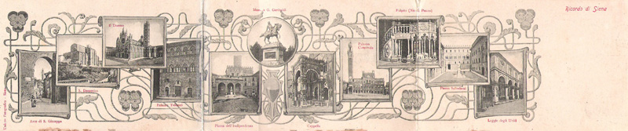

- MISCELLANEA PALIESCA -

I Correttori delle 17 Contrade
Fantini morti pochi mesi dopo la loro ultima presenza in Piazza
Più di un secolo di Palio sulle riviste e i periodici d'epoca
Le tavole di Duilio Cambellotti
I luoghi dove si tutela la sicurezza dei Cavalli del Palio di Siena
Tutti i musei di Siena per scoprire la città
Provini di stampa per cartoline mai realizzate di Giorgio Carapelli
Foto stereoscopiche di Siena
Sessant'anni fa (rassegna fotografica)
Il Palio nel mondo
I biglietti per assistere al Palio
Le suonerie per smartphone delle Contrade del Palio
Vecchie bandiere del Palio
Nuovissimo Canzoniere Senese
Inni Senesi
Quando nasce un inno
Premio al miglior tamburino
I liquorifici senesi
L'orologio della Chiesa del Carmine
La leggenda delle "quattro verdi" (Bruco, Drago, Oca e Selva)
Barberi e tappini
Il Palio dei cittini
Il Palio con le spennacchiere
Bando per il Palio di giugno 1664
"Il Colonnino", giornale dei senesi extra moenia
I numeri della Piazza del Campo
Nuziali allegrezze
Duecento anni di piante della città di Siena
Gli articoli di Mario Ascheri
Tesi sulle Contrade a cura di Camilla Marzucchi
Tesi sul Palio a cura di Emanuele Brogi
Tesi sul Palio a cura di Antonio Marchi
La sincronicità del Palio a cura di Antonio Marchi
La corsa che non si lascia leggere di Alejandro Gregori
Siena, Palio e Contrade: uno zibaldone (di Mario Ascheri)
La sintesi superiore delle contrade a cura di Zsuzsanna Tóth-Izsó
Giostre, Quintane, Palii e Rievocazioni Storiche nel '900
Il regolamento del Palio redatto da Violante di Baviera nel 1721
Regolamento per il Palio del 2 luglio 1883
Il regolamento del Palio
CON LE ULTIME MODIFICHE
Una giornata al Palio vissuta da Massimo d'Azeglio
Le figurine Liebig
La King & Country e il Palio di Siena
1849: La Ferrovia Siena-Empoli
Sulle scritture contabili delle Contrade
I vecchi colonnini di Piazza
Le caramelle delle contrade
Le foto dei paggi fra il 1879 e il 1903
Il carnevale di New Orleans del 2023
La posa della terra in Piazza
Ordine di entrata delle Contrade fra i canapi per le prove
Aneddoti e racconti contradaioli
Il Magistrato delle Contrade
Il Comitato Amici del Palio
Uno scudo davvero storico
L’incredibile anagramma di "Con magis tibi Sena pandit"
I Signori della Festa dal 1634 al 1695
I Giudici della Vincita
I Deputati della Festa
Gli Ispettori di pista
La pista
I presidenti del Consorzio per la Tutela del Palio
Antiche bandiere
Le bandiere sopra le porte cittadine
I francobolli sul Palio
Siena nella filatelia
Buste da lettera impreziosite da immagini cittadine
Gli archivi parrocchiali della Diocesi di Siena
Gli oratori di Contrada
Le fontanine di Contrada
I musei delle Contrade
Le società di Contrada
Le stalle delle Contrade
L'artigiana dei finimenti dei cavalli
I numeri delle Contrade
Terminologia paliesca
Chi ha vinto per primo col nuovo Presidente della Repubblica
Chi ha vinto per primo col nuovo Sindaco di Siena
Gonfalonieri, Podestà e Sindaci di Siena dal 1787
Ilio Bocci: operaio, partigiano, sindaco, chiocciolino
NUOVO
Definizione per i cavalli
Il Palio al cinema
I fumetti sul Palio
Come era Siena in cartolina
Artisti presenti nelle cartoline di Siena
I dintorni di Siena in cartolina
Piazza del Campo alla fine della II Guerra Mondiale
Le accoppiate vincenti
I pisciatoi di Siena
Il Palio in una frase


 CON LE ULTIME MODIFICHE
CON LE ULTIME MODIFICHE